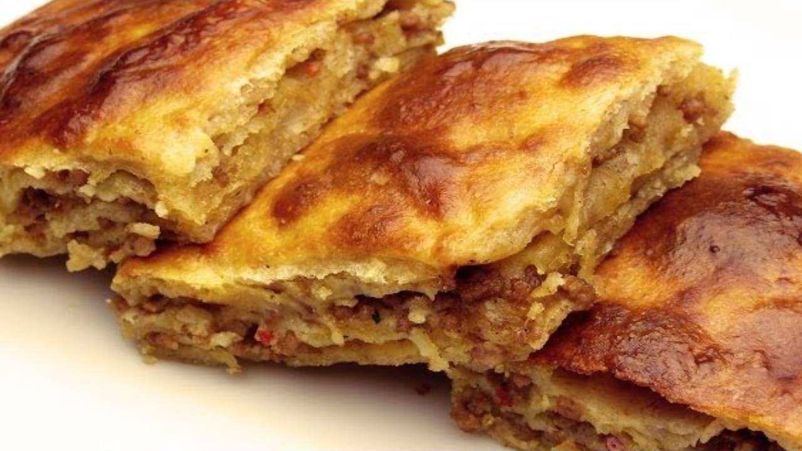
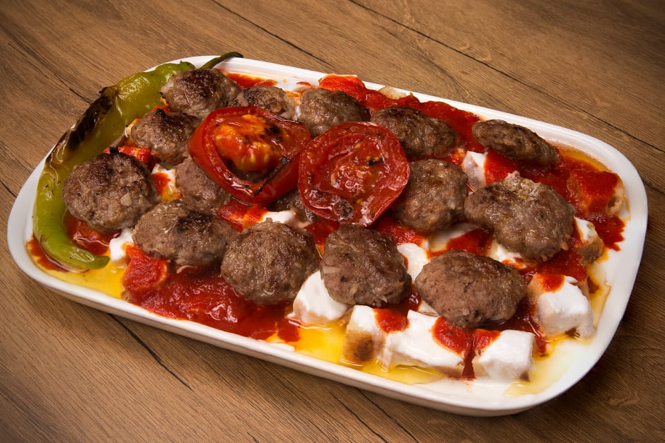
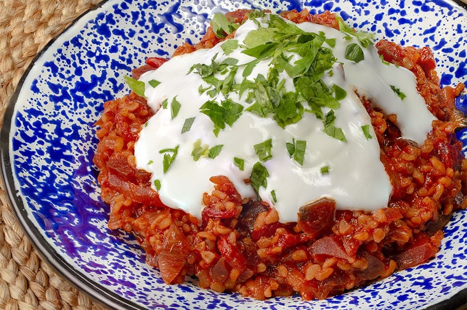

TARİFLER
Soğan Pidesi Tarifi

Soğan Pidesi Tarifi İçin Malzemeler
- 1 Su Bardağı süt
- 1 Su Bardağı su
- 1 paket instant maya (10 gram)
- 1 Çay Bardağı sıvı yağ
İç Malzemesi için:
- 6 adetsoğan(doğranmış)
- 3 adetdomates(rendelenmiş)
- 1 yemek kaşığıdomates salçası
- 1/2 demetmaydanoz(kıyılmış)
Tarifler Menüsüne Git
Balaban Kebabı Tarifi

Balaban Kebabı Tarifi İçin Malzemeler
Köfte için:
- 500 gram dana kıyma
- 1 çay bardağı bayat ekmek içi(ince çekilmiş)
- 1,5 çay kaşığı tuz
- 1,5 çay kaşığı karabiber
Domates sosu için:
- 2 yemek kaşığı domates salçası
- 1/2 yemek kaşığı tereyağ
- 1 çay kaşığı toz şeker
- 1/2 çay kaşığı tuz
Tarifler Menüsüne Git
Nokul Tarifi

Nokul Tarifi İçin Malzemeler
Nokul Tarifi Hamuru İçin:
- 1 adet yumurta (sarısı üzeri için)
- 2 yemek kaşığı yoğurt
- 1 çay bardağı sıvı yağ
- 1 paket instant maya
Nokul Tarifi İç Harcı için:
- 1 su bardağı iri çekilmiş ceviz içi
- 1/2 su bardağı toz şeker
- 1 tatlı kaşığı toz tarçın
- 50 gram tereyağı (araları için)
Tarifler Menüsüne Git
Siron Tarifi

Siron Tarifi İçin Malzemeler
- 3 adet yufka
- 1 yemek kaşığı tereyağı
- 150 gram dana kıyma
- 1/2 adet soğan (yemeklik doğranmış)
Sulandırılmış Yoğurt Sos İçin:
- 2 su bardağı süzme yoğurt
- 2 diş sarımsak
- 1,5 su bardağı su
- 1 çay kaşığı tuz
Tarifler Menüsüne Git
Haşhaşlı Lokum Tarifi

Haşhaşlı Lokum Tarifi İçin Malzemeler
Hamuru için:
- 2 su bardağı ılık süt
- 3/4 su bardağı ılık su
- 1 yemek kaşığı şeker
- 1 yemek kaşığı kuru maya
İçi İçin:
- 2 çay bardağı haşhaş
- 2 yemek kaşığı şeker
- 3/4 çay bardağı sıvı yağ
Tarifler Menüsüne Git
Kömbe Kurabiye Tarifi

Kömbe Kurabiye Tarifi İçin Malzemeler
Baharatları için:
- 1 çay kaşığı mahlep
- 1 çay kaşığı muskat cevizi rendesi
- 1 çay kaşığı öğütülmüş damla sakızı
- 1 çay kaşığı toz zencefil
Hamuru İçin:
- 1 su bardağı eritilmiş tereyağı
- 1 su bardağı süt
- 1 su bardağı sıvı yağ
- 1 tatlı kaşığı kabartma tozu
Tarifler Menüsüne Git
Pezzik Cacığı Tarifi

Pezzik Cacığı Tarifi İçin Malzemeler
- 3 yemek kaşığı zeytinyağı
- 1 adet soğan
- 1/2 su bardağı pilavlık bulgur
- 1 yemek kaşığı domates salçası
- 2 adet közlenmiş kırmızı biber
- 1 adet pancar(haşlanmış,suyuyla birlikte)
- 4-5 yemek kaşığı çırpılmış yoğurt
- 1 avuç doğranmış maydanoz
Tarifler Menüsüne Git